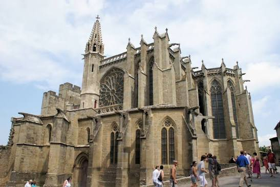

Basilique
Saint-Nazaire


⟹ Édifices religieux & Patrimoine ⟸
Aux origines du siège épiscopal de Carcassonne. La tradition fait remonter une première église chrétienne sur le point culminant de la Cité au VIe siècle, à l’époque wisigothique. Le premier acte authentique mentionnant l’édifice date de 925. Sous l’épiscopat de Gimer, le siège de l’évêque de Carcassonne est transféré à l’église placée sous le double vocable de saint Nazaire et saint Celse. Autour d’elle se développe un véritable quartier cathédral comprenant palais épiscopal, cloître, bâtiments canoniaux et dépendances.

La grande cathédrale romane. À la fin du XIe siècle, Carcassonne connaît un important renouveau religieux et monumental. En 1096, le pape Urbain II, qui parcourt le Midi après l’appel à la première croisade, vient à Carcassonne et bénit les pierres du nouveau chantier. La construction se poursuit durant la première moitié du XIIe siècle sous la domination des Trencavel. La nef romane, massive et sobre, avec ses collatéraux et ses puissants supports, demeure aujourd’hui le principal témoin de cette campagne.
La cathédrale des Trencavel. Aux XIe-XIIe siècles, Saint-Nazaire se trouve au centre de la vie religieuse de la vicomté. Les évêques comptent parmi les personnages majeurs de la Cité et le chapitre cathédral dispose de ses propres bâtiments. L’église accompagne l’affirmation politique des Trencavel, vicomtes de Carcassonne, Béziers, Albi et Razès, jusqu’au bouleversement de la croisade contre les Albigeois.
1209 : la Cité change de monde. La prise de Carcassonne par les croisés de Simon de Montfort en août 1209 puis le rattachement progressif de la vicomté au domaine royal transforment durablement le contexte politique. Au XIIIe siècle, la monarchie capétienne renforce les fortifications de la Cité. Dans le même temps, l’évêque et le chapitre souhaitent moderniser leur cathédrale selon le langage architectural prestigieux venu du nord du royaume.
Le spectaculaire chantier gothique. À partir des années 1260-1270, le transept et le chœur romans sont remplacés par un ensemble gothique rayonnant d’une grande audace. Le chantier, poursuivi jusqu’au début du XIVe siècle, crée un contraste exceptionnel avec la nef romane conservée. De hautes baies occupées par de vastes verrières inondent le sanctuaire de lumière. Les vitraux, dont certains remontent au XIIIe siècle, comptent parmi les ensembles médiévaux les plus remarquables du Midi de la France.
Un sanctuaire au cœur d’une forteresse royale. Après le traité de Corbeil de 1258, puis pendant les siècles où Carcassonne garde la frontière entre royaume de France et terres de la couronne d’Aragon, la cathédrale vit à l’intérieur d’une place forte stratégique. Elle conserve pourtant sa fonction religieuse et funéraire, accueille les cérémonies épiscopales et s’enrichit de chapelles, tombeaux, sculptures et verrières. Son architecture constitue ainsi un rare dialogue entre art roman méridional et gothique rayonnant.
Du déclin de la Cité au transfert de la cathédrale. Après le traité des Pyrénées de 1659, Carcassonne perd une grande partie de son rôle militaire. La ville basse, plus active économiquement, prend progressivement le dessus. Le Concordat réorganise les diocèses : en 1801-1803, le siège cathédral est transféré à l’église Saint-Michel de la Bastide. Saint-Nazaire cesse donc d’être cathédrale après près de neuf siècles de centralité épiscopale.
Le sauvetage au XIXe siècle. Alors que la Cité se dégrade et que certains envisagent le démantèlement de ses fortifications, l’érudit carcassonnais Jean-Pierre Cros-Mayrevieille se mobilise pour sa sauvegarde. Saint-Nazaire est protégée dès 1840 parmi les premiers Monuments historiques français. Prosper Mérimée soutient l’intervention d’Eugène Viollet-le-Duc, qui restaure l’ancienne cathédrale entre 1844 et 1860 avant de travailler sur l’ensemble de la Cité. Ces restaurations, parfois interprétatives selon les principes du XIXe siècle, jouent un rôle essentiel dans la conservation du monument.
De l’ancienne cathédrale à la basilique. En 1898, le pape Léon XIII confère à Saint-Nazaire-et-Saint-Celse le titre de basilique mineure, reconnaissance de son ancienneté et de son importance spirituelle. Aujourd’hui, la basilique demeure affectée au culte et constitue, avec le château comtal et les remparts, l’un des monuments majeurs de la Cité de Carcassonne, inscrite au patrimoine mondial de l’UNESCO. Elle est surtout célèbre pour l’équilibre saisissant entre sa nef romane et son chevet gothique baigné par la lumière des vitraux.